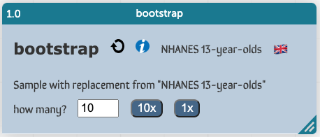
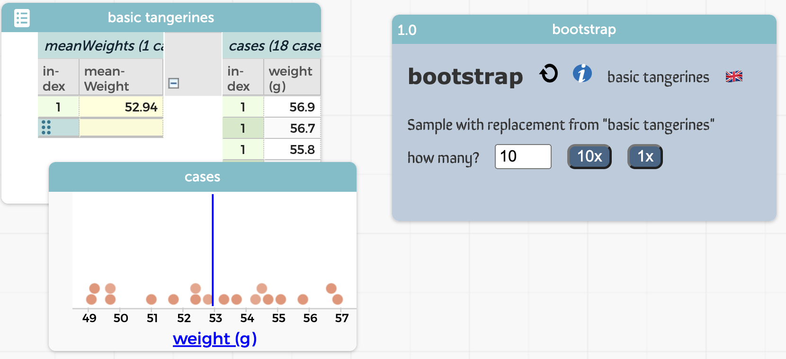
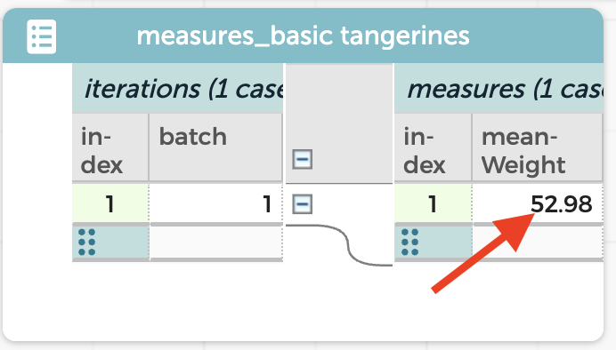
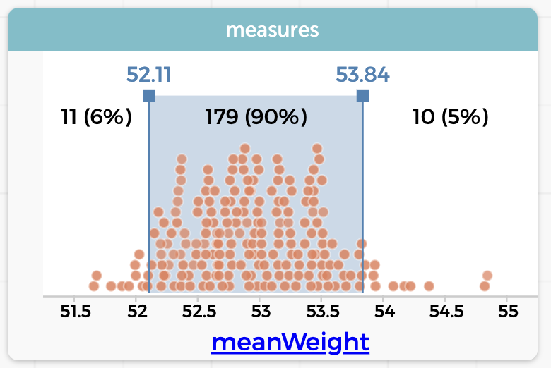

26 Randomization and Estimation: the Bootstrap
In statistics, “estimation” means estimating a parameter. This parameter might be a property of some object, like the diameter of the Moon. An individual measurement will have some error, so you take multiple measurements and average them.
A key point here is that the resulting estimate is not just the average you get; it’s an interval. You’ll say that your estimate of the diameter is some big number “plus or minus” some small number.
A parameter might also be some parameter of a population such as the percentage of people who support a candidate, or the mean weight of capybaras. In a traditional stats class, you learn to use confidence intervals to do estimates like these, and compute that interval. The idea is that you will be 95% “confident” that the true value of your parameter is in the interval.
You could call our version of the confidence interval a plausibility interval.
If you just want to jump in and do it,

- Go to this sample document.
- Click the blue info button in the bootstrap object.
- Follow the instructions!
If you want to take it a little more slowly, you’re in the right place…
26.1 Thinking through bootstrapping
Suppose you measure the weights of 10 capybaras and you find that their mean weight is 47 kilograms. If these capybaras are a suitably random sample of all capybaras, what can you say about the mean weight of all capybaras?
Clearly our best guess is 47 kilos as well. But will it be exactly 47 kilograms? Of course not. Capybaras vary in weight, and there’s no way we accidentally, randomly, got 10 capybaras that were perfectly representative of the whole species.
The big question is, how far off of the population mean is the mean of our single sample likely to be?
To find out, we do something that kinda sorta smells like what we did with randomization tests and scrambling.
Here’s the plan:
We write the weights of all ten capybaras on chips and put them into a bag. Then we draw out ten chips, record the numbers, and find the mean. However, we put each chip back after we draw it. That is, we are sampling with replacement. This is called a “bootstrap sample.”
Because we put them back every time, we’ll probably get some duplicates. Similarly, some of our capybaras won’t be represented in a particular bootstrap sample. Therefore the means we get won’t be exactly the same as the mean of our “real” sample. Some means will be larger, some smaller, depending on which chips we pulled.
We will do this many times, and then look at the distribution of means in order to assess how far off our single-sample mean is likely to be.
26.2 Your first bootstrap: Trader Joe’s tangerines
We don’t have measurements of capybaras, but we do have one bag of 18 Trader Joe’s tangerines, measured by students at Lick-Wilmerding High School in San Francisco in 2017.
These data appear in a live example below, with a graph of the weights, also showing the mean, which is a little under 53 grams.
- Make a new column called
meanWeightand compute the mean ofweight. It should be 52.94 g. - Now we want to get the bootstrap plugin. As of May 2023, it is not in the Plugins menu, so we will do the following:
- Choose Import… from the hamburger menu.
- Click URL and enter
https://codap.xyz/plugins/bootstrap/into the box. - Click IMPORT. The bootstrap plugin appears.
- bootstrap will complain that it needs a measure. You have one:
meanWeight! Drag it to the left.
You are ready to strap on your boots. Your workspace should look something like this:

- Press the 1x button to do a single bootstrap resample. A new dataset appears, called
measures_basic tangerineswith one value of the mean under themeanWeightcolumn (on the right). It will probably not be the same value as the original, which makes sense.

- Graph
meanWeight. Collect more samples. They should center roughly around the true mean, 52.94. - Keep collecting so you have a total of 200.
This distribution should be pretty symmetrical, and centered on the original mean.
Think about what each point represents: a mean of 18 values drawn from a distribution equal to that of the real data. That is, if all groups of TJ tangerines are statistically the same as the 18 in our bag, each one of these values is a possible mean.
To see the last bootstrap sample,
- Go to the Tables menu.
- Choose
bootstrapSample_basic tangerines - Graph
weightand compare it to your original data. Can you see the holes? The duplicates?
(We did this when we scrambled the heights of 13-year-olds)
All of the means in our graph are possible, some values are more likely. We have 200 values; let’s find the “middle” 90%. We will exclude 10 cases on either end of the distribution.
- In the ruler menu/palette, press Movable Value and Add twice. You now see a range.
- Also in the ruler, check Count and Percent.
- Move the values to get as close as you can to 10 (or 5%) in each tail.
You should have a graph more or less like mine:

With this technique, we have created what I call a 90% “plausibility interval.” My best guess for the mean weight of all Trader Joe’s tangerines is 52.94 grams. But I would not be at all surprised if it were anywhere in the range from 52.11 to 53.84. If somebody gave me a bag of 18 tangerines, and their mean weight was 55, I would think that maybe they were from another store, or that maybe TJ had changed supplier (since 2017, almost certain!), or something else that made these new tangerines systematically different from the ones in the original bag.
Now notice, looking back at the original data, that a single tangerine of 55 grams is not surprising at all! Here are the two graphs together, scaled the same:

This makes some kind of sense. Looking at the original data graph, we see that if we pulled a 55-gram tangerine out of a TJ bag, chances are good that most of the other 17 will be lighter.
We could spend a great deal of time right here on why the distribution of means is so much narrower than the distribution of the original data. But that is the province of a more formal stats class.
It does, however, speak to our goal of developing a taste for stability. The tangerines have a weight range of about 53 ± 4 grams, but a bag of 18’s mean is within about 53 ± 1 gram. The mean of a large sample is stable in a way that the individual data are not.
All of the caveats we made in the scrambling chapter apply here as well.
For example, it is wrong to say that there is a 90% chance that the true mean falls in the range we described above.
All we can say is that if our bag is perfectly representative of the distribution of all tangerines, then samples of 18 drawn from that same distribution will have means in that interval about 90% of the time.
Got that? It’s easier just to say that it’s plausible that the true mean is in the interval. How plausible? You’re 90% confident.
If you need something more official, learn about confidence intervals, but even then, watch out: they don’t mean what people often think either!
26.3 Commentary
The one most important thing?
With real data, the numbers you calculate or measure are uncertain. Therefore, always consider reporting a range rather than a single number.
The Big Dogs are getting better and better at this. Polling results, for example, almost always have a margin of error.1 But how do you display that in a graph? There are a number of choices, none of which are easy to do in CODAP. But you can read about then on this interesting site from PBS about using data in news reporting.
The next thing:
That uncertainty (generally) goes down as your sample size increases. More people in your sample, more tangerines in your bag, the more certain you are about averages or other calculated values such as sums, proportions, medians, etc.
Correspondingly, if you break a sample down into groups, each group is smaller than the whole, so the group uncertainty is inevitably larger (i.e., worse) than the whole sample’s uncertainty.
This is usually a 95% confidence interval, which will be close to our 95% plausibility interval.↩︎